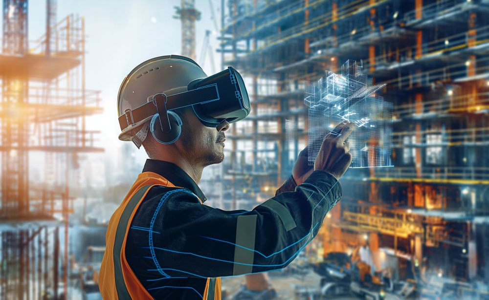
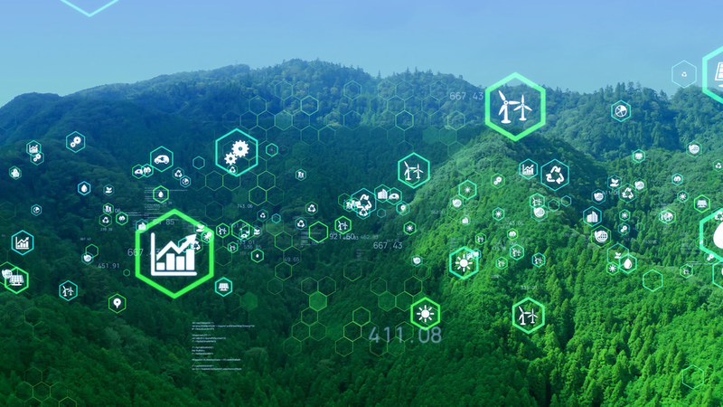
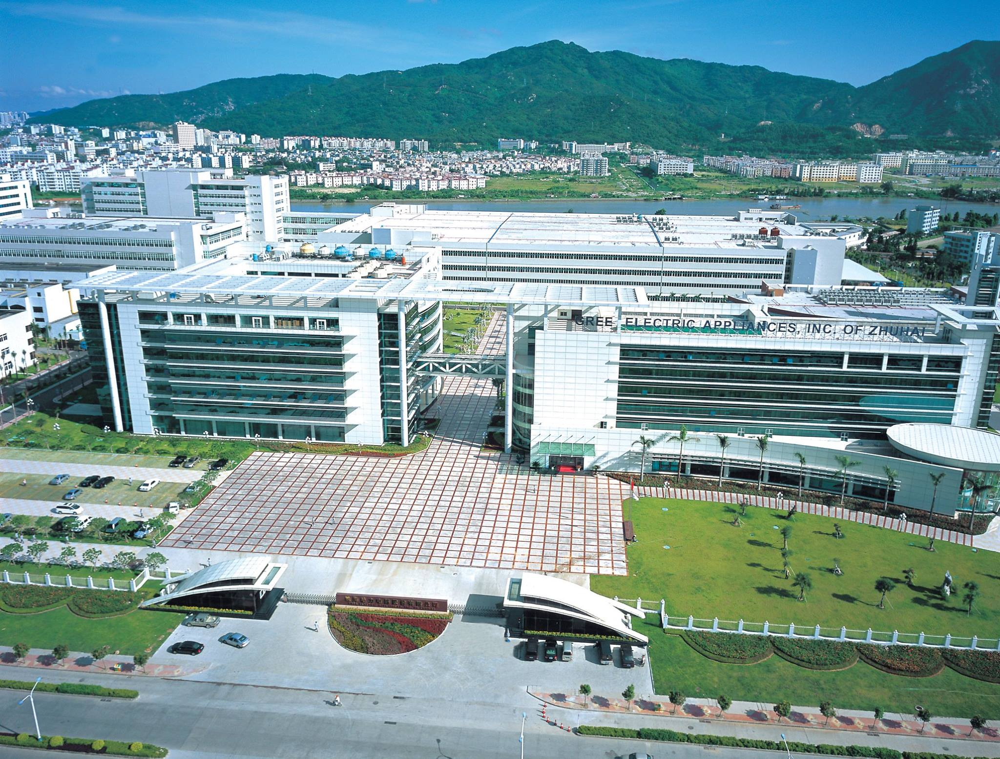

CIM Digital Twin & IOC Platform
Empower your smart city and enterprise management with the advanced City Information Modeling (CIM) and Intelligent Operations Center (IOC) platform by Shenzhen Chenpusen Information Technology Co., Ltd. Seamlessly integrate BIM, GIS, and AIoT architectures.
Comprehensive Platform Architecture
A unified platform utilizing foundational data, AI computing, and edge gateways to build the ultimate digital twin base for modern cities.
IoT Platform
Handles real-time data collection, device registration, rule engines, and message proxies across an extensive network of IoT hubs.
AI & Algorithm Models
Powered by advanced AI computing engines to deliver security monitoring, passenger flow analysis, traffic simulation, and pipe network modeling.
3D GIS Management
Manages BIM/CIM models with lightweight processing, geographic scene management, and spatial baseline services for precise twin rendering.
CIM Visualization
Highly scalable frontend applications supporting multi-terminal smart city, smart construction, green low-carbon, and industrial investment dashboards.
Multi-Scenario Intelligent Operations
Delivering deep visualizations for all operational ecosystems, allowing centralized intelligent management.

Smart City & Mobility
Track real-time vehicle-road coordination, autonomous mini-bus routes, unmanned delivery systems, and automate sweeping vehicles. Ensure seamless urban flow with integrated smart parking management.

Smart Construction Site
Comprehensive monitoring of project progress, personnel attendance, and perimeter security. Analyze real-time environmental metrics such as AQI, PM2.5, power consumption, and water usage to mitigate safety risks.

Green Low-Carbon Network
Enable Virtual Power Plants by integrating photovoltaic power generation, energy storage devices, and flexible load controls. Visualize energy flows and efficiency metrics to achieve sustainable operations.
Next-Gen AI & Micro-Refined Management
AI Smart Interaction
Elevate user experiences with Unity-based virtual character models. The platform features an extensive built-in digital avatar library, combining voice synthesis with high-precision voice recognition (>90% accuracy). Utilize NLP-driven voice commands to intuitively control the IOC dashboard and assist in rapid decision-making.
Digital Building Support
Gain unprecedented micro-refined visibility into building operations to reduce maintenance overhead and improve response times.
- 3D Visual Monitoring: Stunning macro and micro scene visualizations.
- System-wide Control: Live monitoring of HVAC, lighting, plumbing, power distribution, and elevator statuses.
- High-precision Simulation: Intuitive building structure dismantling and pipeline routing lookups for efficient maintenance.

Success Stories
Real-world implementations demonstrating the transformative power of our CIM & IOC platforms.

Kexing Science Park
Context: A billion-level smart tech park complex housing 40,000+ talents and 400+ high-tech enterprises.
Solution: Deployed a digital operation platform integrating IoT, asset management, and operation services to reduce energy consumption and significantly improve service efficiency.

Zhuhai Gree Group
Context: A state-owned enterprise building a modern industrial park integrating production, living, and ecology.
Solution: Implemented a comprehensive smart solution powered by 4 base platforms, 9 application integrations, and 18 smart system integrations to create a cutting-edge smart industrial space.
Lenovo Smart Manufacturing
Context: A Fortune 500 global operations center requiring comprehensive digital manufacturing operations.
Solution: Deployed a global IOC based on IoT, ESG management, and BIM digital O&M to enable unified global command, refined multi-plant management, and significant production efficiency gains.